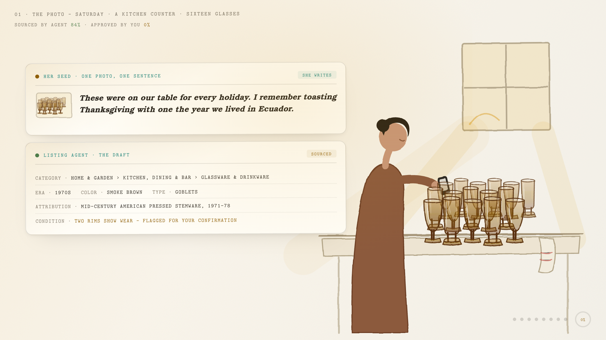
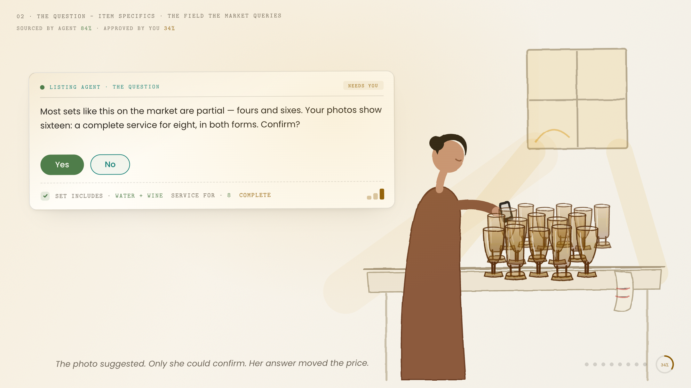
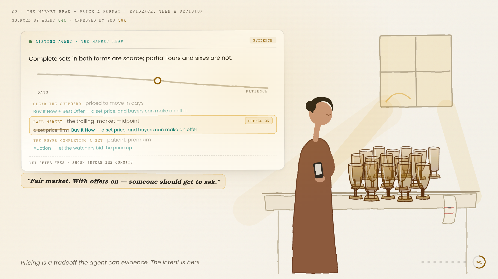
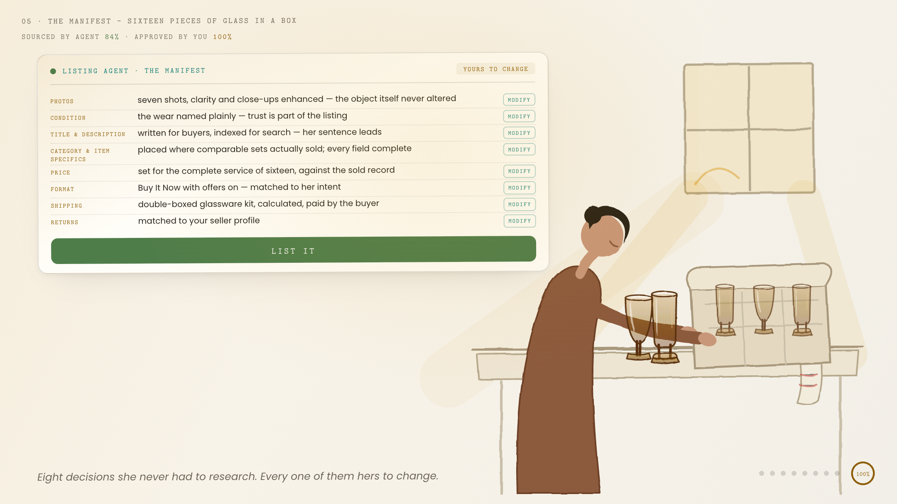

“The agent knows the market. The seller knows the object.”
A listing is where two kinds of knowing meet. The judgment call at the end stays human — and teaches the agent.
Magical Listing's promise is a listing from a photo or a prompt. This artifact is a point of view on what makes that promise compound: an agent that carries the market's knowledge to the seller, asks for the knowledge only the seller holds, and leaves every judgment call in her hands. Told through one real listing: sixteen pieces of smoke brown glass on a kitchen counter.
What follows is the life of one listing, from a Saturday-morning photo to sold — a seller who does not know what her glasses are worth, and an agent that knows the market but not her cupboard. The item is deliberately ordinary, because the discipline is about the seller, not the category. Its anchor is the State Tracker: SOURCED BY AGENT 84% · APPROVED BY YOU 0% → 100%. The second number is the plot.




She gives the agent one photo and one true sentence. The draft assembles around them — category, era, condition read — then the agent asks for what only she can give: three more shots, and the confirmation the photo can't prove. Sixteen, complete, both forms. Her answer moves the price.
It filled in what she couldn't type. She confirmed what it couldn't see.Evidence first: complete sets are scarce, partial fours and sixes are not. Then three intents on a curve — clear the cupboard, fair market, the buyer completing a set — each with its format, in plain words. She picks fair market and flips offers on. The agent's pairing was a default; her judgment adjusted it.
“Fair market. With offers on — someone should get to ask.”Her sentence leads the description; the agent's title serves the search bar; the anchors underneath are drawn from listings that sold, each removable. Then the manifest: eight decisions handled — photos, condition truth, price, format, the box for sixteen pieces of glass — every one carrying a Modify.
Eight decisions she never had to research. Every one of them hers to change.Every organ of a listing has two authors and a system behind it — and the role's named platform partners each own part of the anatomy.
Every field a seller must research is friction the agent can carry. The burden moves from her typing to the system's evidence — and the evidence is shown, not asserted.
The agent that asks the seller a question is not failing to automate. It is reaching for the one knowledge source the market lacks: the person holding the object.
Recommendations arrive paired and evidenced — an intent with its format, a price with its record. The seller's override is expected, visible, and teaches the agent.
The wear named plainly; the object never altered; and the cleaner her path, the richer the structured data she leaves behind. The listing that admits its flaws is the listing buyers believe — trust compounds one honest listing at a time.
“Magical” can mean two things. The seller disappears from the loop, or the seller is elevated by it. Only one of those builds a marketplace. A first-time seller with an agent should list like a five-thousand-sale professional — graded condition, complete specifics, evidenced price — without surrendering the story, the intent, or the final click.
I have built for this marketplace before: Best Offer, launched in 2004, drove more than $1B in transactions in its first year and was patented — and it worked because it was designed around how buyers and sellers feel about negotiating. The emotion is the spec. For the past two and a half years I have practiced human-AI collaboration design daily and in public. eBay surely tests every change to a page that matters this much; the agentic era is still the moment to step back and rebuild the listing page around what earns trust — the object, the condition truth, and the human behind it.
“The agent brings the market. The seller brings the object. The judgment stays human — and teaches the agent.”